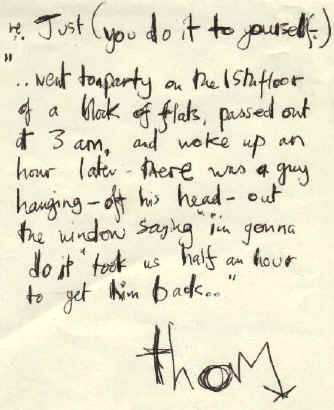

| Original Version:
[3:53]
|
The Bends
Just single |
| Alternative Versions: | Live at The Forum, London, Just For College Promo |
| Date of first release: | Mar 95 |
Can't get the stink off He's been hanging round for days Comes like a comet Suckered you but not your friends One day he'll get to you And teach you how to be a holy cow You do it to yourself, you do And that's what really hurts Is that you do it to yourself Just you and no-one else You do it to yourself You do it to yourself Don't get my sympathy Hanging out the 15th floor You've changed the locks three times He still comes reeling through the door One day I'll get you And teach you how to get to purest hell You do it to yourself, you do And that's what really hurts Is that you do it to yourself Just you, you and no-one else You do it to yourself You do it to yourself You do it to yourself, you do and that's what really hurts Is that you do it to yourself Just you, you and no-one else You do it to yourself You do it to yourself, yourself, yourself
One of Radiohead's finest works, and a live favourite. An all out rock war "to try and see how many chords we can fit in one song". According to Thom the song is about trying to get rid of someone who just won't go away.
The video to the song is one of the most frustrating ever written - but nobody knows what the man says at the end, and there is no use asking as the band have said that they are never going to reveal the answer. Jamie Thraves, the producer had said "to tell you would deaden the impact, and would probably make you want to lie down in the road too".
Here's Thom's comments on the song :
